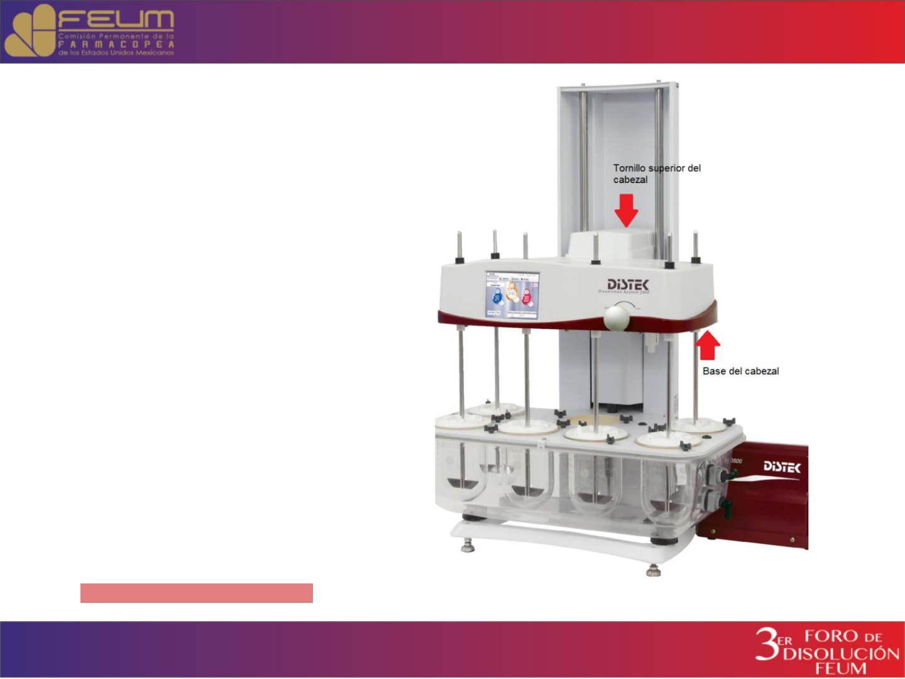

CALIBRACIÓN MECÁNICA.
INTRODUCCIÓN
El propósito de la calibración
parece muy simple: determinar si el
Disolutor cumple o No cumple. De
acuerdo a requerimientos de las
farmacopeas ,técnicos y de los
fabricantes tomando en cuenta los
cambios en la tecnología y en los
análisis del día de hoy.

Calibración��y/o��
Calificación.
Los términos actualmente se utilizan
indistintamente en el área farmacéutica pero no son
sinónimos realmente .Calibración es conjunto de
operaciones que tiene como finalidad establecer
las relaciones entre los valores indicados por una
medida material o por un instrumento de medida y
los valores correspondientes de un
mensurando.(RAE,2019)
La calificación es apreciar o determinar las
cualidades o circunstancias de alguien o
algo.(RAE,2019).
�Calibración�o�
Calificación�Mecánica
Parámetros
1. RPM 50,100,150 ± 1RPM
2. Vibracion hasta 0.0025mm de desplazamiento y
200Hz
3. Nivel menor o igual de 0.5°
4. Temperatura 37.0 ± 0.5°C
5. Bamboleo menor o igual a 1mm
6. Profundidad 25mm ± 2mm
7. Centrado menor o igual a 2mm
�PVT
Requerido por la USP
• 1970- Los científicos encuentran gran variación en los resultados
de disolución de un aparato a otro. La USP y FDA presionan
para estandarizar las pruebas de disolución.
• En diciembre de 2009 se deja como tableta calibradora a la
Prednisona solamente.
• Adecuabilidad del sistema de disolución descrito en el Método
<711> de la USP
• Verificación periódica, normalmente dos veces por año
• Calibración química con Estándares USP
• Tabletas de Prednisona (Desintegrables)
• Tabletas de liberación extendida de Maleato de Clorfeniramina
(Aparato 3).
• Las tabletas de la USP son estándares para realizar la
adecuabilidad del sistema que valora todos los elementos de un
método de disolución (equipo, analista, método analítico).
Calibración analítica o
Calificación de
Desempeño
Observaciones
generales en pruebas de
disolución errores
comunes
• Nivel del baño
• Temperatura del baño y
vasos
• RPM
• Patrón de flujo
hidrodinámico constante
• Posición de muestreo
manual o automático
• Condiciones de las
paletas, vasos y
canastillas
• Tapas
• Factor Humano
• Volumen de la disolución

Propuestas
• Tener un control mecánico mas estricto
dependiendo la carga de trabajo puede ser
semestral.
• Tener una inspección de accesorios más rigurosa,
como filtro para garantizar el desempeño del
equipo con un stock de accesorios certificados
necesarios en caso de sustitución.
• Una determinación de intervalos de calibración de
cada equipo por el historial que se vaya generando
de cada Disolutor.
• Agregar los resultados de las 5 disoluciones
realizadas al equipo después de su calibración y/o
Calificación mecánica global.
MUCHAS GRACIAS POR SU
ATENCIÓN